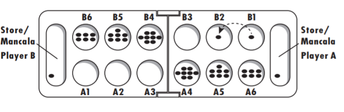

Maddie Cox | JavaScript Game
JavaScript Game - Mancala
Instructions
- The game starts with Player 1 picking one of the spaces on their side of the board.
- Moving counterclockwise, the pebbles are deposited into each following space (excluding the opponent’s score space) until the pebbles run out.
- If the last pebble the player deposits is in their score space, they get another turn.
- If the last pebble the player deposits is in an empty space, the player captures any pieces in the space directly across the board and places them directly in their score.
- This process repeats until one player’s side of the board is empty.
- When one player’s half of the board is empty, the other player collects all of the pebbles on their side of the board for their score.
- Whoever has the most pieces in their score space wins.

 Haley C.
Haley C.